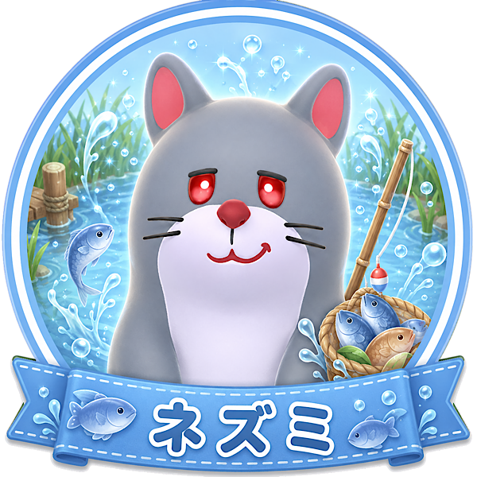

「おちゃめな後半職人」タイプ
あなたは、少しクセのあるキャラや雰囲気を楽しめるタイプ。
見た目の個性やユーモアも含めて、キャラ選びを楽しめます。
一見ふざけているように見えても、必要な場面ではきちんと役割を果たせる人です。
後半でじわじわ活躍するような、知る人ぞ知る強みを好む傾向があります。
ネズミは魚を素早く釣り上げられる、釣り担当に向いたキャラです。
魚の需要が出てくる後半ほど便利さが増し、釣りにかかる時間を大きく短縮できます。
見た目の個性を楽しみつつ、必要な場面でしっかり役立てるキャラです。
おちゃめさと実用性の両方を楽しみたいあなたに向いています。